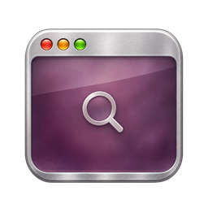

CashTab
Твой маленький рабочий стол в новой вкладке.
Версия 1.0.1 · Сделано для тебя
Ссылки, заметки и обои хранятся локально. Расширение не читает историю, не получает доступ к другим страницам и не запускает приложения Windows. Иконки открывают сайты.
Вдохновлено настольным Mac. Не связано с Apple.
Иконки: Icons8, Bootstrap Icons, Iconify Logos. Права на логотипы принадлежат их владельцам. Фон создан с ImageGen.
Экспорт не включает изображение обоев.